reclaimit is a Go CLI and terminal UI that recognizes known build artifacts and caches, groups them by project, and lets you review a dry run before deletion.
go install github.com/svg153/reclaimit/cmd/reclaimit@main
A synthetic workspace shows the complete workflow without exposing a real home directory or deleting a file.

Most disk tools answer “what is big?”. reclaimit identifies known developer artifacts and explains how they are regenerated.
Recognizes 17 cleanup categories across JavaScript, Python, Rust, frontend builds, Bun, pip, pipx, and macOS metadata.
Preview before delete. --yes flag required. Context nodes that never imply deleting the repository root itself.
Plain text, Markdown with diagrams, JSON for automation, and an interactive terminal tree.
Groups cleanup candidates by project, not just by raw size — so you see "next.js project caches" not just "2.3GB".
Export stable JSON scan and cleanup metrics for scripts, CI jobs, and reproducible comparisons.
Prebuilt releases are standalone executables. Building current source requires Go 1.25.12 or newer.
Three commands. Three ways to reclaim space.
Choose by job: map the whole disk with a general analyzer, then review known developer artifacts with reclaimit.
| Need | Best fit | Reason |
|---|---|---|
| Understand usage across an arbitrary disk or directory | ncdu, gdu, dust, or dua | General filesystem exploration and size analysis |
| Find known regenerable developer artifacts | reclaimit | 17 named categories with regeneration context |
| Review cleanup candidates by Git project | reclaimit | Repository grouping, TUI selection, and dry run |
| Export candidate metadata for automation | reclaimit | Plain text, Markdown, and JSON output |
Common questions about reclaimit.
analyze and tui are read-only. Cleanup requires --yes, revalidates each candidate, and atomically moves it into a private same-filesystem quarantine before deletion. Changed data is preserved with a reported recovery path. Deletion remains irreversible, so review a --dry-run first and keep backups for valuable data.
Seventeen categories including node_modules, Python virtual environments and caches, dist, build, Rust target, .next, .nuxt, pip and pipx data, .bun/install/cache, and macOS metadata.
It covers a different step. ncdu, gdu, dust, and dua are better for exploring arbitrary disk usage. reclaimit focuses on recognized developer artifacts, project grouping, and review-before-cleanup. They work well together.
Yes. Use --exclude-path for exact paths or --exclude-group for prefix-based exclusions.
Yes. reclaimit is written in Go and supports Linux, macOS, and Windows.
The scanner enforces one configurable concurrency ceiling across the complete traversal, supports clean cancellation, and reports scanned, skipped, and truncated entries. Performance depends on the filesystem, tree shape, and storage hardware.
Yes. analyze --format markdown --out report.md produces a Markdown report with tables, Mermaid diagrams, and PlantUML blocks.
Start with read-only analysis, inspect the result, then decide what to clean.